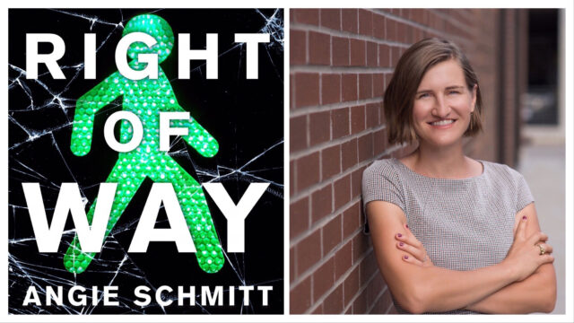
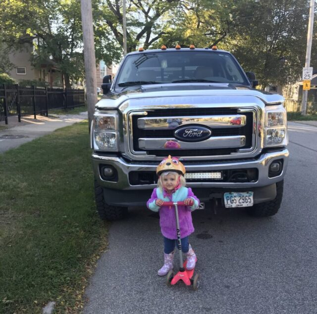
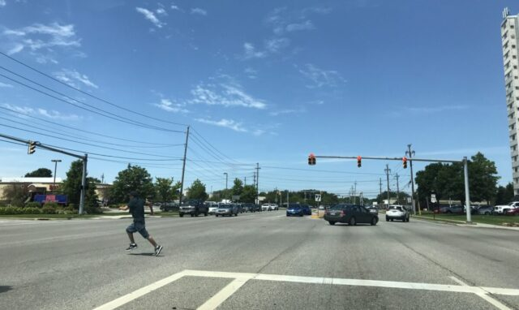

Angie Schmitt On Race, Class and Traffic Violence in America
by Kiran Herbert, Communications Manager
January 27, 2021
The author of “Right of Way” discusses the silent epidemic surrounding pedestrian deaths in the U.S., fixes city planners can implement today, and what’s got her feeling good about the future of active transportation.

Angie Schmitt is the author of “Right of Way: Race, Class, and the Silent Epidemic of Pedestrian Deaths in America.” (All photos courtesy of Angie Schmitt)
For almost a decade, Angie Schmitt has worked the transportation beat, primarily as a writer and national editor for Streetsblog. In that time, there has been a 50% increase in U.S. pedestrian deaths. Lax vehicle regulations, the explosive growth of Sun Belt cities, and a national emphasis on not impeding car traffic have all contributed to that terrible—and completely preventable—statistic. The data also makes clear that certain populations are bearing the brunt of the burden: Victims of traffic violence are disproportionately poor, people of color, immigrants, and/or elders.
Thanks to the years she spent reporting on the systematic inequality in U.S. transportation, as well as her master’s degree in urban planning, Schmitt is often tapped as an expert by those interested in creating safer streets and more livable cities. In the last six years, she has also had two children, a change that brought a whole new perspective to the work she was already doing.
“Once you have kids, your greatest fear becomes something happening to them,” says Schmitt. “The number one reason in the United States parents bury their children is because of car crashes.”
That knowledge inspired her to write “Right of Way: Race, Class, and the Silent Epidemic of Pedestrian Deaths in America,” which was released last August, amidst the pandemic that in a lot of ways mirrors the public health crisis Schmitt outlines in the book. Over the course of 10 chapters, readers learn why pedestrians are dying and are challenged to imagine safer, more equitable cities where lives aren’t relegated to the realm of expendable statistics.
For the first time in years, however, Schmitt and other transportation experts are feeling cautiously optimistic. Last week, Joe Biden became the first president to have lost a child and a spouse to traffic violence. A longtime proponent of train travel, Biden has also nominated a slew of progressive experts to staff the United States Department of Transportation (USDOT), a notable departure from the last administration.
Read on to learn about some of the stories that informed Schmitt’s book, how our problems with traffic violence are uniquely American, and what actions can be taken to curb the epidemic.

Having children was the driving factor behind Schmitt’s choosing to write her book.
A Conversation with Angie Schmitt
Q: In your book, you emphasize that what we tend to consider “traffic accidents” really aren’t “accidents” at all. They’re completely preventable!
A: That’s what’s frustrating about reporting on this stuff—I ended up getting really passionate about traffic safety, which has been considered just an un-sexy issue or a long time. It’s hard to engage people on the topic but it affects so many. Almost all of us will have a family member or friend that is killed or seriously injured in a car crash over our lifetime.
Right now, there’s a lot of important issues competing for people’s attention and obviously, traffic safety is not always the most important, but it doesn’t get enough attention compared to the harm it causes. If we could garner awareness and discussion a little close to the level of harm it causes, we could save a lot of lives.
Q: I was hit by a truck last October and I was fortunate in that I was at a marked pedestrian crosswalk, in a wealthy part of town, in the middle of the day—and that I survived and could articulate my perspective. Still, the driver and even my insurance tried to blame me. What role does victim blaming play in how we discuss traffic violence as a culture?
A: Victim blaming is the biggest obstacle for change. We’re never going to make any progress on this issue if we just point our fingers back at the people getting hurt and say that it’s their fault. I think that’s what we do with a lot of social problems. We’ve made progress on the way we view other social issues [such as domestic abuse or the opioid epidemic] but with victim blaming, we haven’t had a breakthrough in the way. It’s still socially acceptable to blame people after their death and a lot of times it’s really inaccurate. I think we’ve had some success in certain activist circles, changing some of that framing and reaching more people, but we have a long way to go.
Distracted walking led to 6,000 pedestrian fatalities involving vehicles last year. Let’s keep our heads UP! pic.twitter.com/H6K7ho1Oyx
— Mercury Insurance (@MercuryIns) July 10, 2018
Q: What role does privilege play?
A: Privilege is really important when it comes to whose stories get told. There are two women I use as an example in my book that both lost a kid to a car crash; both were pedestrians when their kids were killed. One is Amy Cohen, a white woman who has a professional background—not ultra-rich or anything, but living in New York when she lost her son. On the other hand, there was a lower-income Black mother in suburban Georgia, Raquel Nelson, who lost a son in the same way.
In the case of Raquel Nelson, not only was she blamed but they tried to prosecute her for vehicular homicide, based on the idea that she was jaywalking and so was responsible for her son’s death. Amy, however, was able to attract a lot of media attention and sympathy. Now, I think the setting of New York is part of the explanation here, it’s not fully class and privilege, but she was able to engage with pretty powerful elected officials almost immediately afterward. Through a lot of grassroots organizing, not unilaterally, she was able to implement some policy changes.
Q: There have been recent moves by some publications to start naming victims in an effort to make them less of a statistic. How can those of us covering traffic violence help shift the narrative?
A: At newspapers, you might get a press release from the police department saying there’s a fatality and write a couple of sentences, with all the information coming from a single source without any real investigation. We know a lot of times there are problems with police reporting, especially with this type of issue where there might be an asymmetry of information—there hasn’t been an investigation or the person who’s injured is incapacitated and can’t tell their side of the story. Those types of reporting conventions are really horrible. Reporters also often want to tie-up loose ends and provide an explanation, so if there’s a report from the police that makes it seem like the victim’s at fault, they might roll with it.
Sometimes stories will include a victim’s name. There was a really interesting report I wrote about in a book that looked at a bunch of stories over time in a Canadian city. The report said that outside of the name there was often no humanizing or descriptive details about victims, so even if you do get a name and an age, you don’t get anything about who they were. In that report, they said people who fit the idea of a “perfect victim,” like a young girl, would be much more likely to have personal information included about them. That kind of thing is valuable and it’s a shame that we miss it. People not having their stories told is part of the problem.

As Schmitt outlines in her book, many “accidents” occur when pedestrians are forced to cross high-speed, multiple-lane roads without crosswalks or other safe options nearby. This scenario is more common in low-income neighborhoods.
Q: We know that disproportionately, those stories would be of older folks and people of color. Why is that?
A: Some of the racism and economic marginalization stuff I talk about in the book would apply to people of color and Indigenous folks across the board. The conventions for transportation planning and the people who are doing transportation planning work—it’s not a very representative field. Transportation engineering in particular is a very white, male profession. I sort of picked on engineers in the book, but I think a lot of it applies to planning too.
You have planners coming from one perspective and I think when we’re thinking through planning decisions—it has to do with capitalism and economic development too—we’re planning for the person we think of as typical. That’s probably a middle-aged man that commutes by car from a suburb to the city. That’s the sort of person we’ve been catering to with our transportation spending and planning. But not even the majority of Americans would fit that profile—there’s so much more diversity in our experiences, habits and ages.
For example, there isn’t much in the way of planning that focuses on children. We’re also not doing a very good job planning for elderly or retired people, a huge growing demographic. Likewise, for people who have disabilities that affect their mobility—those folks aren’t often centered in planning decisions. People that fall outside of that “typical” profile, and especially those that fall outside of it in multiple ways, end up being put in harm’s way as a result.
Q: How do you see more equitable bike share programs as part of a way to combat this epidemic?
A: If we could be investing in alternatives to everyone driving for every trip, which is the way we’ve been planning, that’d be a good thing. Obviously, if people are biking instead of getting in a car, then they’re not going to hit people. There are other benefits as well and I’m all for bike share as part of a more sustainable and more diverse set of transportation choices, where we’re accommodating people that have different needs or situations. It definitely plays a role in trying to address these types of safety issues.
One thing I found out while doing this research, and I’m not 100% sure how reliable these statistics are, but walking is actually more dangerous on a per-mile basis than biking is, which is sort of surprising. I’m not sure but maybe it has to do with there being a little more organized advocacy for cyclists and a little bit more political support sometimes.
Read more: Why bike share equity matters for reducing traffic fatalities.
Q: In general, what are some of the easier, first steps cities can take to end traffic violence?
A: I don’t know if there are any really easy solutions. It’s not necessarily rocket science, it’s a matter of priorities. We do complex projects a lot but the focus has always been on reducing commute times. That’s always been the overarching goal rather than improving safety for vulnerable folks.
One of the more promising strategies that I’d say is easier is retiming traffic signals. There’s this cool tool called Leading Pedestrian Interval, which has been used a lot in New York City and some other cities and is recommended by the Federal Highway Administration, so it’s not a controversial thing at all. It basically gives pedestrians a head start on the traffic light, so instead of competing with turning cars, they have a few seconds at the beginning that’s just for them. That’s one inexpensive and really effective tool.
A lot of cities will also start with mapping the most dangerous street intersections and a lot of times there’s a handful that account for a lot of the crashes. Then, you have to start thinking about how to change those streets to make them a little safer.
Q: In your book, you discuss how public transit ridership in cities is closely associated with lower traffic deaths since transit cuts down on car trips and provides an alternative for the riskiest drivers. Should every city be refunding public transit?
A: The United States has about twice the fatality rate per capita as Canada, so we have about twice as much of our population die in traffic. I asked one top expert on traffic safety in Canada about it and one of the things he said was that the United States has more lenient policies around a lot of things like seat belt wearing and speeding. He also said that some of our policies are just different and arguably worse, like those around drunk driving. But Canada also has double the transit commuting rate than we do in the United States, which shows that they have more substantial investments in transit.
That can really move that needle on traffic safety because a) it leads to more walkable urban design if more people are taking transit, so that reduces car trips regardless of the number of trips taken on transit, and b) it gives people an option if their license gets taken away. In the U.S., we don’t even have a functional enough transit system that we feel comfortable taking people’s licenses away, even if they’ve done something really dangerous in a car. In the United States, we’re often more comfortable putting a drunk driver in jail than taking their license away. It can just be so crippling for people economically and socially to not have a car if they don’t have alternatives.
Q: Reading your book, I just kept feeling like this is such a uniquely American problem. What’s up with that?
A: I talk about this in the book, but a lot of these equity issues are much worse in developing nations where only 10% of the population drives at all but they have two or three times as many traffic deaths as we do in the United States per capita. But the United States is special among wealthy nations with the number of traffic deaths we have and we’re just really free-wheeling about a lot of this stuff. It’s a bit similar to what’s happened with Corona, too—I think this type of issue comes up all the time in American culture. We have this concept of freedom where people feel like they should be able to do whatever they want, but individual freedom needs to be limited to the extent that you’re harming others.
Like with mask-wearing, should your preference for not wearing a mask allow you to infect someone else with this terrible disease? It’s the same thing with speeding. The Canadian traffic expert I talked to put it well: He said in the U.S. there’s “freedom to”—freedom to speed, to not wear a mask—but on the other hand, there’s not “freedom from.” In the U.S. you have all this freedom to drive a really huge car really fast but we lack the freedom from having to worry our kids will be killed if they walk to school. It’s a very bad tradeoff we make in a lot of ways. It’s a bit similar to guns. I think it’s a weird part of our culture to have this high tolerance for risk and unfortunately, it’s become pretty partisan.
Q: On that note, we have a new president and administration. President Biden, who’s very familiar with traffic violence, has chosen Pete Buttigieg as his transportation secretary. What does this mean for active transportation in the U.S.? Are you feeling hopeful?
A: Yes, very. I think Pete Buttigieg is a fine choice for transportation secretary, but the undersecretaries that they just announced last week are a bunch of superstars. I know a lot of them and they’re very impressive and very progressive choices, at least that’s my read on it. They’re putting together this really great team that takes sustainability and equity very seriously. That’s really exciting for me to see come together since I’ve been working on transportation policy for a decade now. Lately, it’s been sort of a bummer where we are with this stuff, so I am excited.
USDOT is actually pretty limited in what they can do—a lot of people don’t understand that, but they don’t set the transportation budget at all, Congress does that. There’s also a transportation bill though, which Democrats have put together, that’s pretty progressive. I think there’s some hope of that passing too, so we could have a big leap forward on safety for vulnerable road users and potentially on spending. We’ll see how it goes negotiating with some of the more moderate Democrats and Republicans since it could end up being watered down, but I do think we’re entering a pretty exciting era for transportation nerds. The stars are aligning.
The Better Bike Share Partnership is funded by The JPB Foundation as a collaborative between the City of Philadelphia, theNational Association of City Transportation Officials (NACTO) and the PeopleForBikes Foundation to build equitable and replicable bike share systems. Follow us on Facebook, Twitter and Instagram or sign up for our weekly newsletter. Got a question or a story idea? Email kiran@peopleforbikes.org.